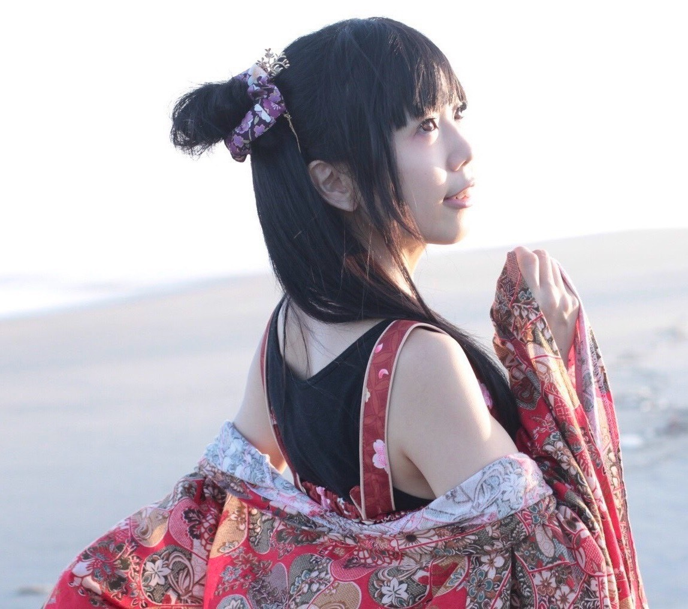
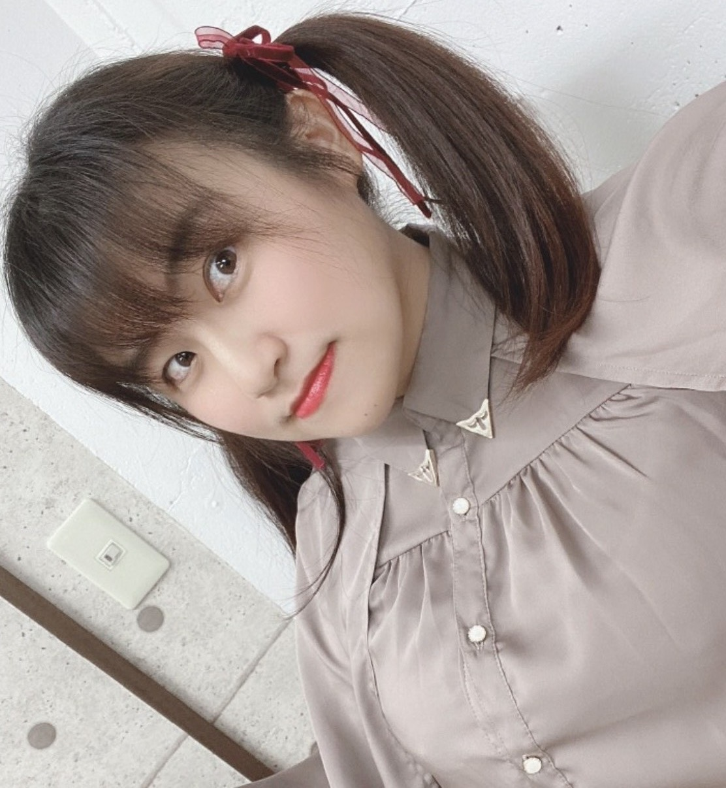
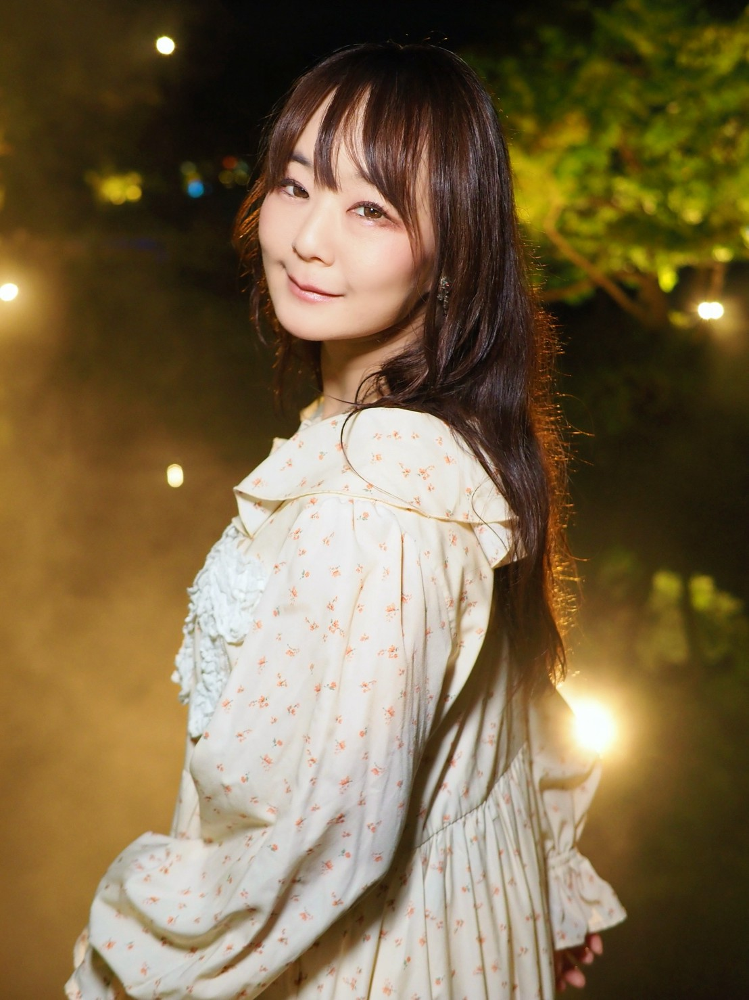
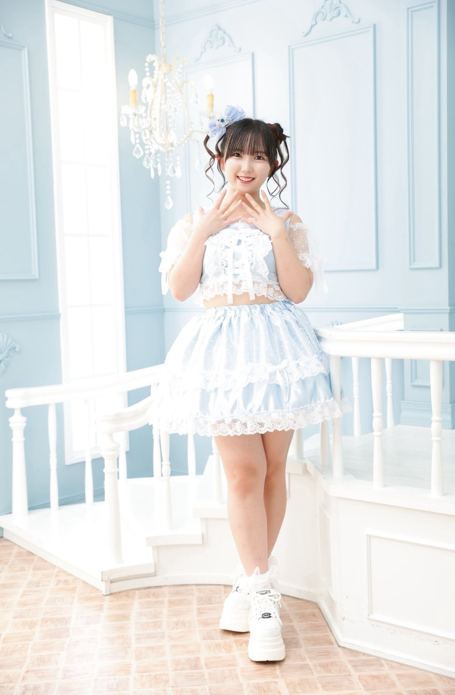
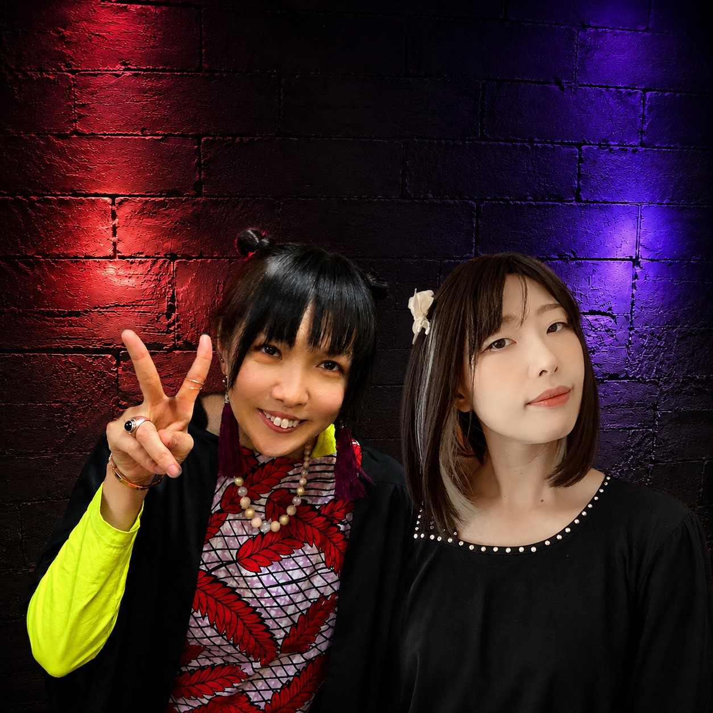
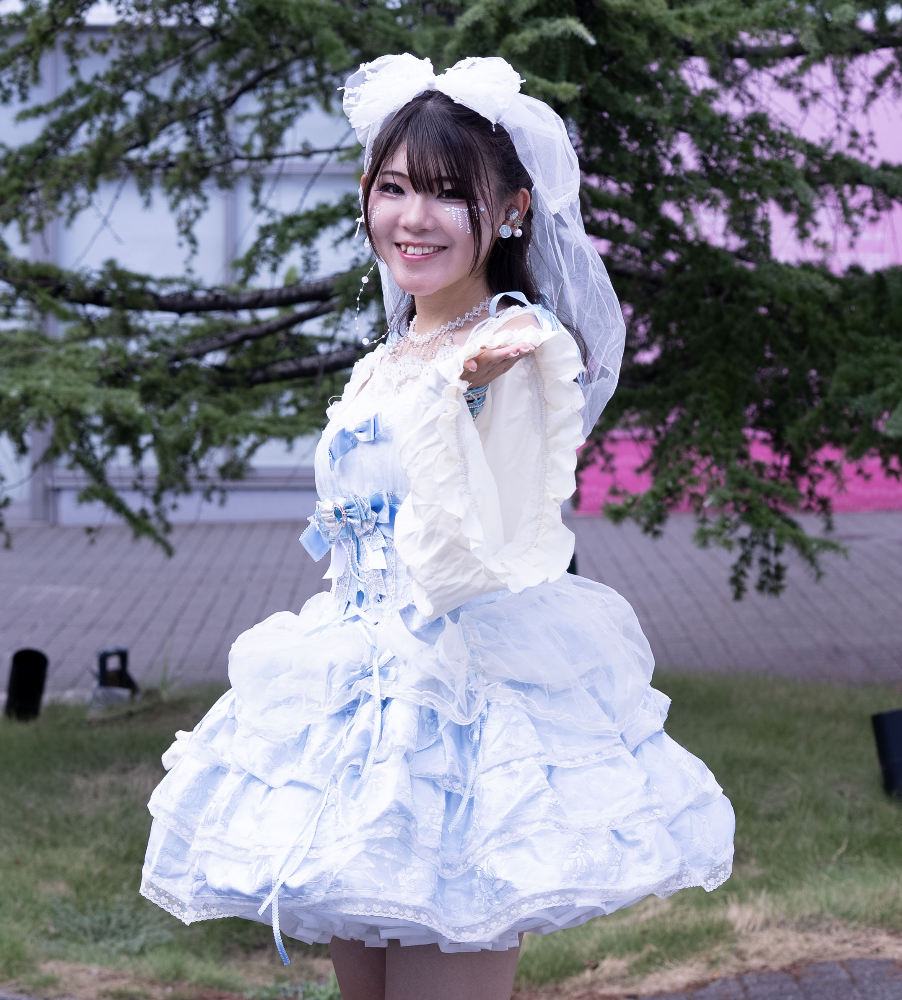

出演アーティスト
新たな出演アーティストは決まり次第、随時こちらのページで発表します。

あみき
タップで写真切り替え
あみき
Amiki
愛知県田原市道の駅観光PR大使
歌・アルトサックス・コスプレイヤー
・イベントMC・ゆるイラストレーターなど
・シングルCD
「愛 SCREAM‼」「ほぼ乙女戦隊ガールマン」
「夜空に咲く星の花」「Midnight party」
・過去のタイアップなど
おもちゃイベント「トイクル体操」
イオン豊橋南店ゆるキャラ「なんなんのテーマ」
・コスプレ
「DIABOLIK LOVERS」フォトコンテスト投票1位
「神様はじめました」フォトコンテスト受賞
花とゆめに掲載
イベントやお祭りなどでコスプレユニット「タラッタ舞楽隊」として出演もしています

Nana＊Rainbow
タップで写真切り替え
高山 奈々
Nana Takayama
名古屋を拠点に活動するシンガー・タレント。Nana＊Rainbowとして、ポップでカラフルな世界観を軸に、観る人の心を明るく照らすステージを展開している。
これまでに、地域イベントや音楽ライブへの出演に加え、司会・ナレーションなどでも活躍。蒲郡・豊橋・長久手など各地のイベントMCを務めるなど、幅広い現場経験を持つ。
現在は子育てをしながらタレント活動を行っており、等身大の魅力とリアルな発信で、多くの共感を集めている。またアニソンやJ-POPをジャズアレンジで届けるプロジェクトにも参加し、さらなる表現の幅を広げている。

椿紗奈
タップで写真切り替え
椿 紗奈
Sana Tsubaki
北海道出身。名古屋を拠点に活動するシンガー。J-POP・歌謡曲・アニソンなど幅広いジャンルを、高い表現力で歌い上げるボーカリスト。
聴く人の心に寄り添うステージを大切にし、ライブハウスや各種イベント、地域催事など幅広く出演。司会・声優・コスプレイヤーとしても活動し、多方面で活躍している。
インディーズにてファーストシングル「HIKARI」をリリース後、ファーストレコードより「青い鳥」を全国リリース。カップリング曲「高山ひとり」はカラオケDAMでも配信中。
現在はアニソンやJ-POPをジャズアレンジで届けるプロジェクトにも参加し、新たな音楽表現にも挑戦している。
活動名義：
ソロ歌手：椿紗奈 ／ 演歌歌手：椿さな ／ #アニソンジャズ：SANA ／ ROUTE23：さな ／ コスプレユニット：タラッタ舞楽隊

ななゆか
ななゆか
Nanayuka
愛知県豊橋市出身！
アニソン・ボカロ・懐メロ
大好きシンガーのななゆかです⭐️
皆様の心に何か響くものが
あれば幸いです！！
当日は楽しく盛り上がりましょ〜👍
虹音（にじね）
タップで写真切り替え
虹音（にじね）
Nijine
名古屋を中心に音楽活動しています。虹に音と書いて『にじね』と言います。
大好きな音楽を通して、虹を見つけた時の様なワクワク感、ほっと心和むような歌をお届けして行けたら嬉しいです！
少しでも誰かの元気のきっかけになれたらとこれからも音楽活動続けて行きたいです✨
どうぞよろしくお願いします。
虹に音と書いて『にじね』🌈
ワクワク✨ドキドキ💓
ハッピーを届ける！
ミラクル天使🧚

ANCHEINBETTyROSE
タップで写真切り替え
ありさ
ANCHEINBETTyROSE
Vo：ありさ Gt&Cho：鈴木悠介からなるユニット。
アクトレスシンガーありさの圧倒的な歌唱力と悠介のギターテクニックが煌めく。
聴く人の心の奥深くに突き刺さる様なドラマチックな楽曲を武器とする非日常型音楽ユニット、ANCHEINBETTyROSE（アンチェインベティローズ）。
2016年 1stシングル「Loop」をリリース。オリコンインディーズチャート19位を記録。
2021年8月「conjunction」をリリース。オリコンインディーズチャート11位を記録。
2022年8月24日 3rdCD「monologue」をリリース。オリコンインディーズチャート11位を記録。
2023年、全国発売の4thCD「運命の花片」はオリコンデイリーチャート9位・オリコンインディーズチャート5位を獲得！
2025年1月7日 5thCD「永劫回帰」全国リリース。総合デイリーオリコン1位🥇、総合週間オリコン14位を獲得！
2026年1月6日 6thCD「ノクティルカ NOCTILUCA〜夜光虫の行進〜」は総合デイリーオリコン3位🥉、総合週間オリコン13位、インディーズ週間オリコン2位🥈を獲得。
ありさは音楽の他に演劇（劇団アルクシアター）、声優、TV CMナレーション、ラジオパーソナリティなどマルチに活動。
愛知北FM 毎週水曜21時半〜「夢のうたげ」パーソナリティ
MID-FM 761 第1金曜23時半〜「ありさの世にも不思議な物語」コーナー番組パーソナリティ
カラオケJOYSOUNDにてANCHEINBETTyROSEの楽曲を全5曲配信中。
公式YouTube：こちら

れんしゃん
れんしゃん
Renshan
名古屋を中心に活動するアイドル。
他にも、
・岐阜県歯科医師会 TVCM出演
・毎週金曜日12時〜 愛知北FMにて【きんようびのアニマルランチタイム】ナビゲーター
・パチスロ演者
など色々なことにも挑戦中！

hozu&ちいらん
hozu&ちいらん
hozu & Chiiran
「ナウい☆ヤング」「唄声浪漫」に所属しているhozu&ちいらん。2人の相性を活かした新しいユニットです。
hozu：
上手く話す事ができないかもしれませんが、皆さんと仲良くなりたいです。
ちいらん：
ちいかわになりたい、ちいらんです。歌うことが好きです。ゆるく活動しています。
よろしくお願いいたします‼️

JURAN
タップで写真切り替え
じゅらん
JURAN
愛知県を拠点に活動する、17歳の現役高校生シンガー候補生。
歌やダンス、表現力を磨きながら、夢に向かって日々勉強中！
夢は、歌を通してたくさんの人に笑顔と勇気を届けられる歌手になること。
現在は「#アニソンジャズ」のメンバーとして、PLUMの助手アンドロイド「JURAN」としても活動しています。

MIYATA Daiki
タップで写真切り替え
宮田 大樹
MIYATA Daiki
1985年6月11日、岐阜県可児市生まれ。役者・歌手・作家として多彩な活動を展開する表現者。
観光PR
名古屋おもてなし武将隊 初代 豊臣秀吉、やっとかめ文化祭まちかど芸披露 案内人、歴史の里しだみ古墳群 PRサポーターなど、名古屋・愛知の文化観光PRを精力的に務める。
主なMC
FIFAワールドカップ adidas円陣プロジェクト、名古屋シティーフェスティバル、あいち技能五輪・アビリンピック2019など大型イベントのMCを担当。
ブランド・活動
ハンドメイドブランド「Radis」主宰のほか、社寺めぐりサークル「しふくのたび」、短編小説を読む会「タンドク」など多彩なコミュニティを主催。
lit.link/miyatadaiki